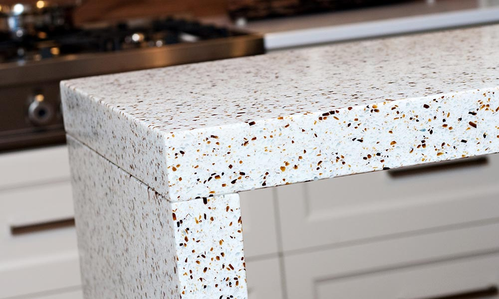
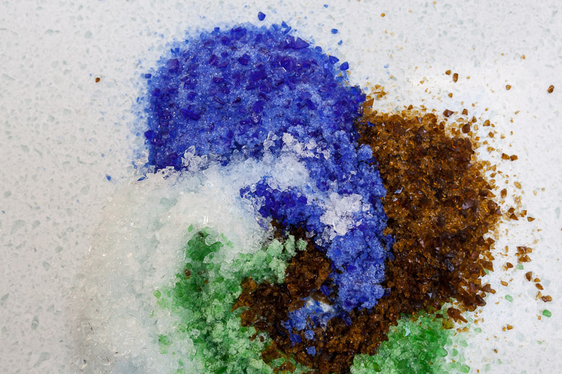

Vitronite от d’ecorce это экологически чистый искусственный камень (агломерат) состоящий на ~80% из переработанных отходов стекла и 20% эпоксидной смолы (про смолу в составе Vitronite читайте ниже). Это безупречное сочетание инженерного искусства, дизайна, элегантности и долговечности. Идеально подходит для создания изысканных столешниц, архитектурных и рабочих поверхностей.
Идеальный материал столешницы?
Ок, мы не настолько высокомерны, чтобы утверждать, что Vitronite - идеальный материал для столешниц, но он чертовски к этому близок. Вот несколько аргументов в пользу Vitronite:
- Прочность - Vitronite создавался специально для использования на кухне и легко выдерживает любые нагрузки при нормальном использовании. Если же с Вашей столешницей всё же что-то случится, мы ручаемся, что сможем отремонтировать повреждения - мы её сделали, мы и починим.
- Устойчивость к царапинам - Стекло - чрезвычайно твёрдый материал. По 10-бальной шкале твёрдости у стекла около 7 баллов, в то время как максимальный балл - у алмаза. В общем-то, именно алмазами мы режем и полируем Vitronite.
- Устойчивость к кислотам - Даже слабые кислоты типа уксуса или лимонной кислоты могут изменить цвет гранита или мрамора. Со столешницей из переработанного стекла такого не случится никогда.
- Никаких пятен - В отличие от гранита и мрамора, Vitronite абсолютно непористый материал. Если Вы не хотите подолгу отмывать столешницу и заботиться о её герметизации раз в полгода-год, для Вас это очевидный плюс.
- Экологичный - Vitronite "зелёный" насколько это вообще возможно. Высокий процент переработанного материала. Никаких отходов. Долгий срок службы. Никаких летучих веществ (не пахнет даже совсем новый). Нужно ли говорить что-то ещё?
- 10 лет гарантии - Мы гарантируем качество нашего материала, поэтому если с Вашей столешницей что-то случится, мы отремонтируем её или поменяем за наш счёт.
Вот так - практически идеальный материал для столешницы!
{kind=link}
Уникальные возможности Vitronite
Мы можем предложить нашим клиентам то, что не сможет сделать ни одна другая компания:
- Индивидуальный цвет - от цвета смолы до цвета наполнителя - варианты бесконечны.
- Комбинированные столешницы - из частей любового цвета и размера. Без швов.
- Полупрозрачные цвета (можно даже с подсветкой!) - они очень круто выглядят, поверьте!
- Бесшовные вставки - надписи, логотипы и т.д. Подробнее смотрите на странице Вывески.
Что внутри Вашей столешницы?

Vitronite на ~80% состоит из переработанных отходов стекла, "склееных" специально изготовленной для этого смолой. Где мы берём стелкло? Везде. Большую часть прозрачного стекла мы получаем от стекольных мастерских, у них всегда много обрезков, которые вполне можно использовать. Кроме того, конечно же мы используем бутылочное стекло трёх видов:
- Коричневое стекло - по большей части пивные бутылки, от "Охоты" до "Гиннеса".
- Зелёное стекло - также в основном пивные бутылки, которые мы спасаем от свалки.
- Синее стекло - очень редкий цвет, только Kronenbourg 1664 Blanc делают синие бутылки. Чтобы запасти достаточно стекла, часто приходится пить его самим. Что поделать, красота требует жертв.
Э.. Смола?
Да, как мы уже писали выше, Vitronite содержит до 20% эпоксидной смолы. Её основные преимущества в том, что это чрезвычайно прочный, непористый материал с минимальным содержанием летучих веществ (не пахнет и абсолютно не токсична).
В отличие от полиэфирной смолы (которая, кстати, используется при производстве кварцевого камня), эпоксидная смола не содержит стирол - карциногенное, жутко вонючее вещество, использующееся в качестве растворителя. Наша смола на 100% реактивная и не выделяет никаких веществ после отверждения.
Эпоксидная смола используется в стоматологии, производстве пищевых контейнеров, протезировании и т.д. и является абсолютно безопасным и нетоксичным материалом.
Твёрдая цена за м2
Неважно какой формы Ваша будущая столешница, сколько в ней вырезов, кромок и отверстий. Хотите узнать сколько она будет стоить? Просто умножьте длину на ширину!
Срок изготовления - 14 дней
Всего две недели и Ваша прекрасная новая столешница готова! Все цвета всегда в наличии, никакого ожидания редких оттенков.
Индивидуальный цвет
Не подошёл ни один из наших цветов? Нет проблем - создайте свой собственный! От цвета смолы до цвета наполнителя - варианты бесконечны.